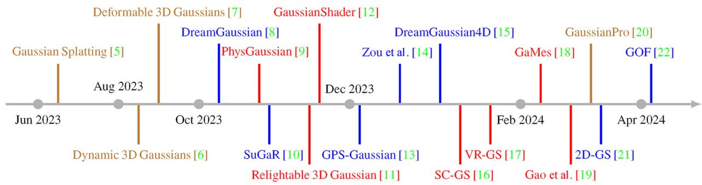
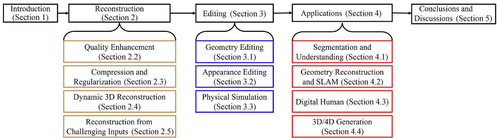
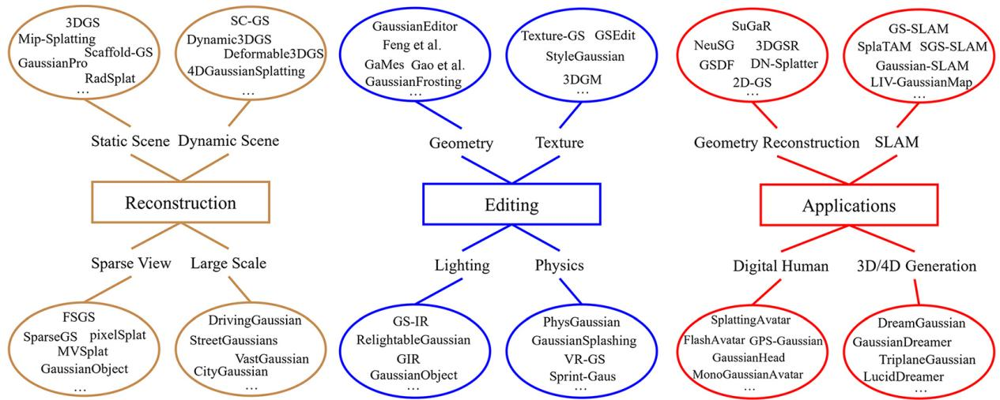

🎨 两篇综述一起读：先用 2024 这篇打地基讲"它到底是什么"，再用 2025 这篇铺开"过去一年到底发生了什么"，最后落到 SLAM 这条专线上。
🎯 主题：3D Gaussian Splatting（3DGS）全景与 SLAM 应用👥 作者：Wu 等（2024）/ Fei、Xu、Zhang、Zhou、Yang、He（2025）📅 年份 · Recent advances in 3D Gaussian splatting & 3D Gaussian Splatting as a New Era: A Survey
"it is still hard to find a robust method that can both train a NeRF quickly enough (under 1 h) on a consumer-level GPU and render a 3D scene at an interactive frame rate (about 30 FPS) on common devices."
而 3D Gaussian Splatting（Kerbl 等，2023）给出的答案是：用一堆"高斯椭球"去近似场景外观，通过光栅化（rasterization）把椭球泼（splat）到图像上。原文紧接着写道，它不仅新视角合成质量和 NeRF 相当，而且：
"achieves comparable novel view synthesis quality but also allows fast convergence (in about 30 min) and realtime rendering (at least 30 FPS) at 1080p resolution."
原图注（Fig. 1, Top）： "The structure of this survey. We begin by introducing the optimization of 3D-GS in terms of efficiency, photorealism, costs, and physics. Then, we review 3D-GS on reconstruction, manipulation, perception, generation, and virtual human applications."
"The rendering process of 3D-GS exhibits similarities to NeRF, yet there exist two fundamental distinctions between them."
(1) "3D-GS directly models opacity values, whereas NeRF converts density values into opacity values."（3DGS 直接建模不透明度；NeRF 先把密度转成不透明度。）
(2) "3D-GS employs rasterization-based rendering, eliminating the need for sampling points, whereas NeRF necessitates dense sampling throughout the 3D space."（3DGS 用基于光栅化的渲染、无需采样点；NeRF 必须在 3D 空间里密集采样。）
把第 (2) 条翻译成人话：NeRF 要沿着每条光线在 3D 空间里密集采样很多个点，再拿神经网络逐个点预测颜色和密度；3DGS 则直接把现成的高斯椭球投影到 2D 再用传统图形学的光栅化画出来，既不用采样、也不用跑神经网络。2024 篇给了一句总结：
"Without sampling points and querying the neural network, 3DGS is extremely fast and achieves about 30 FPS on a common device with comparable rendering quality to NeRFs."
一个具体数字：NeRF 通常每条光线需要约 128 个采样点（"NeRFs typically require 128 sample points along a single ray"），这 128 次网络前向就是它慢的根源；3DGS 把这个开销整个省掉了。这就是"显式表示"对抗"隐式神经场"的本质。

原图注（Fig. 2）： "A brief timeline of representative work using the 3D Gaussian splatting representation."（使用 3DGS 表示的代表性工作简明年表。）
"all Gaussian balls in the scene are first projected onto the 2D image plane, and their color is computed from spherical harmonic parameters. Then, for every 16×16 pixel patch of the final image, the projected Gaussians that intersect with the patch are sorted by depth. For every pixel in the patch, its color is computed by alpha compositing the opacity and color of all the Gaussians covering this pixel by depth order, as in (4)."
⚠️ OCR 修正 + "三步"说法澄清
① 原文写 "16 16 pixel patch"，这是 OCR 把乘号"×"吃掉了，应为 16×16 像素块（tile）。② 两篇综述并没有把 3DGS 形式化为"初始化 / 投影与可微光栅化 / 自适应密度控制"这三步方法论。原文只在各处零散引用了这些概念：初始化（SfM 点，在 Scaffold-GS 处顺带提到；2024 篇 III.C 挑战里说 "The performance of 3D-GS heavily relies on the quantity and accuracy of initial sparse points"）；投影与可微光栅化（即上面 II 节这段）；自适应密度控制（只作为已知概念被引用，如 VII.D 的 "an adaptive strategy for efficiently expanding 3D-GS"、VI.C 的 "It is non-trivial to adapt the adaptive density control operation in the original 3D-GS to the generation framework"）。所以，"三步框架"属于 3DGS 原始论文（Kerbl 等 2023）的归纳，不是这两篇综述自己的表述——若课程需要提"三步"，请明确标注出处。

原图注（Fig. 1）： "Structure of our literature review and taxonomy of current 3D Gaussian splatting methods."（本综述的文献结构与方法分类。）
怎么看这张图： 这是 2024 篇自己的"三分法"总览——按功能把工作切成 3D 重建 / 3D 编辑 / 下游应用（数字人等）三大块。它和下一节 2025 篇的"六分法"是两种不同视角：2024 按"能拿来干什么"分，2025 按"怎么把表示做得更好 + 用在哪些任务"分。读全景时把两张分类图叠在一起看最清楚。
5. 一年路线图：2025 综述的六分类
2025 综述（Fei 等）开篇就说自己的贡献是 "a unified & practical framework … divides the field into six main aspects"（统一框架，把领域切成六大方面）。这六块就是整篇的骨架：
III. 表示 / 优化（Representation）
A. 效率：Scaffold-GS、CompGS、EAGLES、LightGaussian、Octree-GS
B. 真实感：Mip-Splatting、Relightable 3D Gaussian、GaussianShader、GS-IR
C. 成本（少视图）：FSGS、SparseGS、DNGaussian
D. 物理：4D-GS、MD-Splatting、3DGMS、PhysGaussian
IV. 重建（Reconstruction）
A. 静态：SuGaR、NeuSG、pixelSplat、Splatting Image
B. 动态：Gaussian-Flow、Deformable 3D-GS、VastGaussian、DrivingGaussian
V. 编辑（Manipulation）
A. 3D：文本/图像引导、非刚性、省时编辑
B. 4D：动态场景的可交互编辑
VI. 生成（Generation）
A. 物体级B. 场景级C. 4D 生成
VII. 感知（Perception）
A. 检测B. 分割C. 跟踪D. SLAM
VIII. 虚拟人（Virtual Humans）
A. 身体B. 头部
原图注（Fig. 2）： "Taxonomy of existing 3D Gaussian splatting derived methods."（现有 3DGS 衍生方法的分类。）
3DGS 进 SLAM 的逻辑在 2024 篇 4.2.2 说得很透："The explicit geometry representation provided by 3DGS enables flexible reprojection to alleviate misalignment of viewpoints, thus leading to better reconstruction than NeRF-based methods. The real-time rendering feature of 3DGS also makes neural-based SLAM methods more applicable."（显式几何让重投影更灵活、缓解视角错位 → 比 NeRF 重建更好；实时渲染让神经 SLAM 真正可用。）
支持移动的单目与 RGB-D 相机、近实时；"formulates camera tracking for 3D-GS through direct optimization against the 3D Gaussians"（直接对着 3D 高斯做优化来跟踪相机），收敛域大；利用高斯的显式性引入几何校验与正则化。
2025 综述 Section IX 还汇总了 9 个开放方向：Handling Floating Elements（漂浮物）、Trade-off Between Rendering and Reconstruction（渲染↔重建权衡）、Rendering Realism、Real-time Rendering、Few-shot 3D-GS、Integration of Physics、Accurate Reconstruction、Realistic Generation、Combining 3D-GS with Large Foundation Models（与大模型结合）。
原图注（Fig. 3）： "An illustration of refining the representation of 3D-GS: (a) Efficiencies, (b) photorealism, (c) costs, and (d) physics."（改进 3DGS 表示的四类方向：效率/真实感/成本/物理。）
怎么看这张图： 这是讲"卡在哪"最直观的一张——它把 III 章那四个改进维度（效率/真实感/成本/物理）各给了一组对照渲染结果。看图时盯住每一组的"左（原版问题）vs 右（改进后）"，就能把上面那张挑战表从文字变成画面。例如 (b) 真实感那组就在展示反射、法线、抗锯齿的改进。
8. 四种 3D 表示对比（2024 篇 5.2）
2024 篇 5.2 把常见 3D 表示摆在一起比，结论对 SLAM 选表示很有参考价值：
表示
优点
缺点 / 关键结论
Mesh (网格)
存储低、工业最广；配合 PBR 材质可实时出好效果。
大多由艺术家手工制作，耗时。
SDF / NeRF (隐式神经场)
可自动从多视图学习；便于逆渲染 / 表面提取（marching cube）。
"due to the dense sampling in 3D space, rendering is inefficient, limiting their applicability on consumer-level devices"；且 "SDFs and NeRFs are less successful for dynamic scene reconstruction due to their implicit representation"（隐式表示不利于动态重建）。
3DGS (显式高斯)
有显式几何，但没有边与面连接高斯，靠各向异性缩放填补空隙；光栅化可实时。
⚠️ 关键结论："due to the discrete geometry representation, the geometry reconstruction quality of current 3DGS-based methods is only comparable to previous SDF-based methods like NeuS"——即当前 3DGS 的几何重建质量只和 NeuS 这种 SDF 方法持平，并未碾压。要高质量表面，仍需和 SDF/网格结合。

原图注（Fig. 3）： "Representative works based on the 3DGS representation, for different tasks."（基于 3DGS 表示、面向不同任务的代表性工作。）